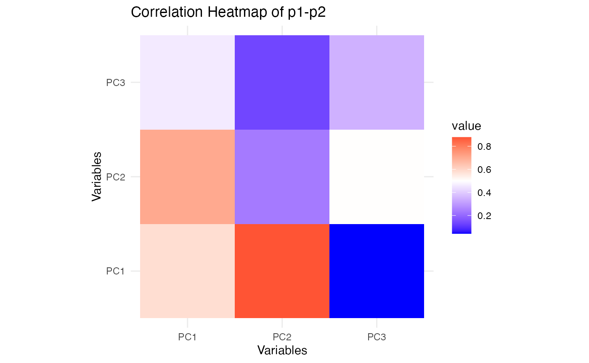
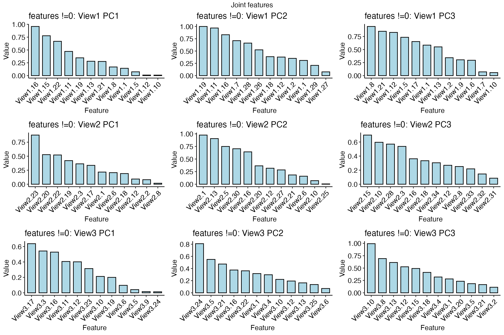
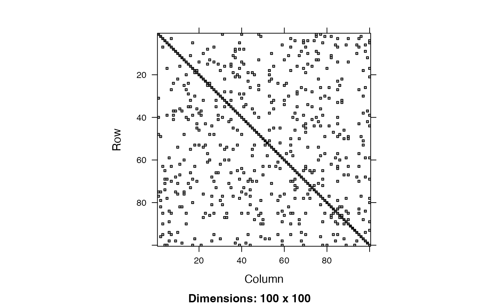
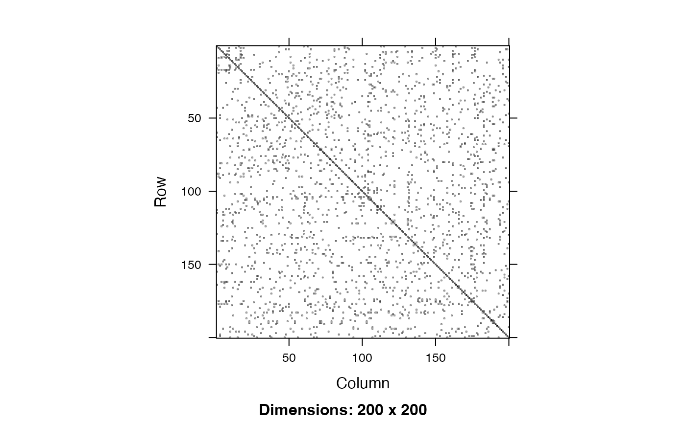

simlr_interpretation
simlr_interpretation.RmdSimilarity-driven multi-view linear reconstruction
Introduction
Similarity-driven multi-view linear reconstruction (SiMLR) is an algorithm that exploits inter-modality relationships to transform large scientific datasets into a smaller joint space. The link between the original data () and the reduced embedding space is a sparse set of features ( ). Standard statistical tools may then be applied on the embeddings .
SiMLR may be used in a variety of other ways. We will cover a basic example and follow with different use cases. These examples are perhaps less involved than those given in the original publication’s cloud computing examples but illustrate new functionality.
Example: Applying SiMLR to Simulated Multi-View Data
In this section, we explore how SiMLR can be applied to multi-view datasets. We’ll generate synthetic data to simulate the application of SiMLR, compare the results to traditional methods like Singular Value Decomposition (SVD), and visualize the relationships between the views. This example derives from the simulation-based evaluation in the original paper.
Step 1: Simulate Multi-View Data
We begin by simulating three different views of data, each representing different modalities or datasets that share some underlying structure.
library(ANTsR)
#> Warning: replacing previous import 'stats::filter' by 'dplyr::filter' when
#> loading 'ANTsR'
#> ANTsR 0.6.2
#>
#> Attaching package: 'ANTsR'
#> The following objects are masked from 'package:stats':
#>
#> sd, var
#> The following objects are masked from 'package:base':
#>
#> all, any, apply, max, min, prod, range, sum
library(reshape2)
set.seed(1500)
nsub <- 100 # Number of subjects/samples
npix <- c(100, 200, 133) # Number of features in each view
nk <- 5 # Number of latent factors
# Generating outcome matrices for each view
outcome <- matrix(rnorm(nsub * nk), ncol = nk)
outcome1 <- matrix(rnorm(nsub * nk), ncol = nk)
outcome2 <- matrix(rnorm(nsub * nk), ncol = nk)
outcome3 <- matrix(rnorm(nsub * nk), ncol = nk)
# Generating transformation matrices for each view
view1tx <- matrix(rnorm(npix[1] * nk), nrow = nk)
view2tx <- matrix(rnorm(npix[2] * nk), nrow = nk)
view3tx <- matrix(rnorm(npix[3] * nk), nrow = nk)
# Creating the multi-view data matrices
mat1 <- (outcome %*% t(outcome1) %*% (outcome1)) %*% view1tx
mat2 <- (outcome %*% t(outcome2) %*% (outcome2)) %*% view2tx
mat3 <- (outcome %*% t(outcome3) %*% (outcome3)) %*% view3tx
colnames(mat1)=paste0("m1.",1:ncol(mat1))
colnames(mat2)=paste0("m2.",1:ncol(mat2))
colnames(mat3)=paste0("m3.",1:ncol(mat3))
# Combine the matrices into a list
matlist <- list(m1 = mat1, m2 = mat2, m3 = mat3)In this code, mat1, mat2, and
mat3 represent three views of the data. Each view is
constructed to share a common underlying structure but with different
transformations applied.
Step 2: Apply SiMLR
Now we apply the SiMLR algorithm to the simulated multi-view data to find a common representation across the views.
# Applying SiMLR
prepro=c( "centerAndScale","np")
constr='Stiefelx100x1'
constr='orthox100x0.1'
constr='Grassmannx100x1'
result <- simlr(matlist,constraint=constr,scale=prepro,
# mixAlg='pca', energyType='cca', # recommended
mixAlg='ica', energyType='regression', # recommended
sparsenessAlg = "spmp",
iterations=100, verbose=TRUE)
#> [1] "Grassmann" "100" "1"
#> [1] " <0> BUILD-V <0> BUILD-V <0> BUILD-V <0> BUILD-V <0> "
#> [1] "initialDataTerm: 0.00853325097828405 <o> mixer: ica <o> E: regression"
#> [1] "Iteration: 1 bestEv: 15.1733636960094 bestIt: 1 CE: 15.1733636960094 featOrth: 0"
#> [1] "Iteration: 2 bestEv: 15.1733636960094 bestIt: 1 CE: 19.3378065831278 featOrth: 0"
#> [1] "Iteration: 3 bestEv: 15.1733636960094 bestIt: 1 CE: 21.1857067162782 featOrth: 0"
#> [1] "Iteration: 4 bestEv: 15.1733636960094 bestIt: 1 CE: 17.768236704359 featOrth: 1.89877650966393e-05"
#> [1] "Iteration: 5 bestEv: 15.1733636960094 bestIt: 1 CE: 27.3527837361661 featOrth: 0.000171877282477527"
#> [1] "Iteration: 6 bestEv: 15.1733636960094 bestIt: 1 CE: 24.8337215929189 featOrth: 7.98819363417363e-12"
#> [1] "Iteration: 7 bestEv: 15.1733636960094 bestIt: 1 CE: 21.6014835742497 featOrth: 1.96544769378543e-10"
# Projecting data into the reduced space
p1 <- mat1 %*% (result$v[[1]])
p2 <- mat2 %*% (result$v[[2]])
p3 <- mat3 %*% (result$v[[3]])SiMLR identifies a sparse set of features that best reconstruct each
view, resulting in projections p1, p2, and
p3 for each view.
Step 3: Visualization and Comparison
To understand the effectiveness of the SiMLR projections, we can compare the correlations between the projections of different views. Additionally, we’ll compare the results to those obtained via Singular Value Decomposition (SVD).
# Calculate SVD for comparison
svd1 <- svd(mat1, nu = nk, nv = 0)$u
svd2 <- svd(mat2, nu = nk, nv = 0)$u
svd3 <- svd(mat3, nu = nk, nv = 0)$u
# Calculate correlations between the SiMLR projections
cor_p1_p2 <- range(cor(p1, p2))
cor_p1_p3 <- range(cor(p1, p3))
cor_p2_p3 <- range(cor(p2, p3))
# Compare with correlations from SVD
cor_svd1_svd2 <- range(cor(svd1, svd2))
# Print the results
cat("Correlation between p1 and p2:", cor_p1_p2, "\n")
#> Correlation between p1 and p2: -0.1469598 0.8445678
cat("Correlation between p1 and p3:", cor_p1_p3, "\n")
#> Correlation between p1 and p3: -0.5011919 0.9324397
cat("Correlation between p2 and p3:", cor_p2_p3, "\n")
#> Correlation between p2 and p3: -0.692099 0.7550467
cat("Correlation between SVD1 and SVD2:", cor_svd1_svd2, "\n")
#> Correlation between SVD1 and SVD2: -0.834545 0.5642089Visualizing Correlations
Visualizing these correlations helps us understand the similarity between the views after the SiMLR transformation.
library(ggplot2)
# Function to plot correlation heatmaps
plot_cor_heatmap <- function(mat1, mat2, title) {
cor_mat <- abs(cor(mat1,mat2))
ggplot(melt(cor_mat), aes(Var1, Var2, fill = value)) +
geom_tile() +
scale_fill_gradient2(midpoint = 0.5, low = "blue", high = "red", mid = "white") +
theme_minimal() +
labs(title = title, x = "Variables", y = "Variables") +
coord_fixed()
}
# Plotting the correlations
plot_cor_heatmap(p1, p2, "Correlation Heatmap of p1-p2")
plot_cor_heatmap(p1, p3,"Correlation Heatmap of p1-p3")
plot_cor_heatmap(p2, p3, "Correlation Heatmap of p2-p3")
These heatmaps show how the reduced representations from SiMLR correlate within each view. Comparing these with similar plots for SVD will reveal whether SiMLR captures more meaningful relationships between the views.
Step 4: Permutation Test
A permutation test can assess whether the observed correlations are significant.
s1 <- sample(1:nsub)
s2 <- sample(1:nsub)
permMats=list(vox = mat1, vox2 = mat2[s1, ], vox3 = mat3[s2, ])
resultp <- simlr(permMats,
constraint=constr,scale=prepro, sparsenessAlg = "spmp" )
p1p <- mat1 %*% (resultp$v[[1]])
p2p <- mat2[s1, ] %*% (resultp$v[[2]])
p3p <- mat3[s2, ] %*% (resultp$v[[3]])
# Compare the permuted correlations
cor_p1p_p2p <- range(cor(p1p, p2p))
cor_p1p_p3p <- range(cor(p1p, p3p))
cor_p2p_p3p <- range(cor(p2p, p3p))
# Print permuted results
cat("Permuted Correlation between p1p and p2p:", cor_p1p_p2p, "\n")
#> Permuted Correlation between p1p and p2p: -0.1602327 0.1008282
cat("Permuted Correlation between p1p and p3p:", cor_p1p_p3p, "\n")
#> Permuted Correlation between p1p and p3p: -0.1961412 0.2505636
cat("Permuted Correlation between p2p and p3p:", cor_p2p_p3p, "\n")
#> Permuted Correlation between p2p and p3p: -0.1998227 0.1645429The permutation test will show if the observed correlations are stronger than those expected by chance.
This introductory example demonstrates how SiMLR can uncover the shared structure across multiple views of data. The correlations between the projections indicate the degree to which the algorithm has captured this shared structure, and the permutation test serves as a validation step.
Integration of Multiple Data Types via Dimensionality Reduction
SiMLR is particularly useful when working with datasets from different modalities (e.g., genomics, proteomics, and imaging data). By finding a joint embedding space, SiMLR can integrate these diverse data types into a unified representation, facilitating downstream analyses such as clustering, classification, or regression.
When dealing with high-dimensional data, dimensionality reduction techniques are often required to make the data more manageable and to avoid issues like the curse of dimensionality. SiMLR provides an approach that not only reduces dimensionality but also maintains the relationships between different views of the data, making it a powerful tool for exploratory data analysis and visualization. Below, we illustrate reading, writing and exploratory integrated visualization.
library(fpc)
library(cluster)
library(gridExtra)
library(ggpubr)
sim2nm=tempfile()
write_simlr_data_frames( result$v, sim2nm )
simres2=read_simlr_data_frames( sim2nm, names(matlist) )
popdf = data.frame( age = outcome, cog=outcome1, mat1, mat2, mat3 )
temp2=apply_simlr_matrices( popdf, simres2,
center=TRUE, scale=TRUE, absolute_value=rep(TRUE,length(matlist)) )
simnames=temp2[[2]]
zz=exploratory_visualization( temp2[[1]][, temp2[[2]]], dotsne=FALSE )
print( zz$plot )
Now we can icorporate the “modalities” in order to predict the simulated outcome matrix. Note that contributions exist from each modality in the regression (in some cases). This is one of the advantages of SiMLR: it provides systematic guidance for building these types of integrative models.
# multi-view regression
summary( lm( age.1 ~ m1PC1 + m2PC1 + m3PC1, data=temp2[[1]] ))
#>
#> Call:
#> lm(formula = age.1 ~ m1PC1 + m2PC1 + m3PC1, data = temp2[[1]])
#>
#> Residuals:
#> Min 1Q Median 3Q Max
#> -1.59476 -0.49317 -0.05545 0.49108 1.84581
#>
#> Coefficients:
#> Estimate Std. Error t value Pr(>|t|)
#> (Intercept) 0.06104 0.07439 0.820 0.413993
#> m1PC1 -4.43285 0.77315 -5.734 1.14e-07 ***
#> m2PC1 2.20857 0.57443 3.845 0.000217 ***
#> m3PC1 2.08357 0.85642 2.433 0.016830 *
#> ---
#> Signif. codes: 0 '***' 0.001 '**' 0.01 '*' 0.05 '.' 0.1 ' ' 1
#>
#> Residual standard error: 0.7439 on 96 degrees of freedom
#> Multiple R-squared: 0.494, Adjusted R-squared: 0.4782
#> F-statistic: 31.24 on 3 and 96 DF, p-value: 3.521e-14
summary( lm( age.2 ~ m1PC1 + m2PC1 + m3PC1, data=temp2[[1]] ))
#>
#> Call:
#> lm(formula = age.2 ~ m1PC1 + m2PC1 + m3PC1, data = temp2[[1]])
#>
#> Residuals:
#> Min 1Q Median 3Q Max
#> -0.73691 -0.25370 0.01167 0.24400 0.95020
#>
#> Coefficients:
#> Estimate Std. Error t value Pr(>|t|)
#> (Intercept) -0.06212 0.03628 -1.712 0.0901 .
#> m1PC1 6.65987 0.37704 17.664 <2e-16 ***
#> m2PC1 6.43757 0.28013 22.981 <2e-16 ***
#> m3PC1 -8.69090 0.41765 -20.809 <2e-16 ***
#> ---
#> Signif. codes: 0 '***' 0.001 '**' 0.01 '*' 0.05 '.' 0.1 ' ' 1
#>
#> Residual standard error: 0.3628 on 96 degrees of freedom
#> Multiple R-squared: 0.8587, Adjusted R-squared: 0.8543
#> F-statistic: 194.5 on 3 and 96 DF, p-value: < 2.2e-16
summary( lm( age.3 ~ m1PC1 + m2PC1 + m3PC1, data=temp2[[1]] ))
#>
#> Call:
#> lm(formula = age.3 ~ m1PC1 + m2PC1 + m3PC1, data = temp2[[1]])
#>
#> Residuals:
#> Min 1Q Median 3Q Max
#> -1.47369 -0.33511 0.02194 0.37138 1.13810
#>
#> Coefficients:
#> Estimate Std. Error t value Pr(>|t|)
#> (Intercept) 0.03258 0.05510 0.591 0.555648
#> m1PC1 2.30838 0.57262 4.031 0.000111 ***
#> m2PC1 1.65765 0.42544 3.896 0.000181 ***
#> m3PC1 1.12709 0.63429 1.777 0.078747 .
#> ---
#> Signif. codes: 0 '***' 0.001 '**' 0.01 '*' 0.05 '.' 0.1 ' ' 1
#>
#> Residual standard error: 0.551 on 96 degrees of freedom
#> Multiple R-squared: 0.7054, Adjusted R-squared: 0.6962
#> F-statistic: 76.61 on 3 and 96 DF, p-value: < 2.2e-16
summary( lm( age.4 ~ m1PC1 + m2PC1 + m3PC1, data=temp2[[1]] ))
#>
#> Call:
#> lm(formula = age.4 ~ m1PC1 + m2PC1 + m3PC1, data = temp2[[1]])
#>
#> Residuals:
#> Min 1Q Median 3Q Max
#> -1.44941 -0.50917 -0.07413 0.54017 1.85159
#>
#> Coefficients:
#> Estimate Std. Error t value Pr(>|t|)
#> (Intercept) 0.02380 0.07451 0.319 0.750
#> m1PC1 -0.82973 0.77439 -1.071 0.287
#> m2PC1 -3.01774 0.57536 -5.245 9.31e-07 ***
#> m3PC1 4.53671 0.85780 5.289 7.74e-07 ***
#> ---
#> Signif. codes: 0 '***' 0.001 '**' 0.01 '*' 0.05 '.' 0.1 ' ' 1
#>
#> Residual standard error: 0.7451 on 96 degrees of freedom
#> Multiple R-squared: 0.4509, Adjusted R-squared: 0.4338
#> F-statistic: 26.28 on 3 and 96 DF, p-value: 1.702e-12
summary( lm( age.5 ~ m1PC1 + m2PC1 + m3PC1, data=temp2[[1]] ))
#>
#> Call:
#> lm(formula = age.5 ~ m1PC1 + m2PC1 + m3PC1, data = temp2[[1]])
#>
#> Residuals:
#> Min 1Q Median 3Q Max
#> -1.28071 -0.43685 -0.04041 0.36609 1.42936
#>
#> Coefficients:
#> Estimate Std. Error t value Pr(>|t|)
#> (Intercept) -0.08199 0.05960 -1.376 0.1721
#> m1PC1 5.27492 0.61938 8.516 2.27e-13 ***
#> m2PC1 -0.85234 0.46018 -1.852 0.0671 .
#> m3PC1 -5.27035 0.68609 -7.682 1.33e-11 ***
#> ---
#> Signif. codes: 0 '***' 0.001 '**' 0.01 '*' 0.05 '.' 0.1 ' ' 1
#>
#> Residual standard error: 0.596 on 96 degrees of freedom
#> Multiple R-squared: 0.6149, Adjusted R-squared: 0.6029
#> F-statistic: 51.1 on 3 and 96 DF, p-value: < 2.2e-16Sparse Feature Selection
SiMLR incorporates sparse feature selection, allowing users to identify a minimal subset of features that contribute most to the joint embedding space. This can be particularly advantageous in settings where interpretability is crucial, such as biomarker discovery in biological datasets.
pp=plot_features( simres2 )
grid.arrange( grobs=pp, nrow=3, top='Joint features' )
Improved Model Interpretability
By projecting the data into a joint space, SiMLR helps improve the interpretability of machine learning models. The sparse feature selection ensures that only the most informative features are retained, making it easier to understand the relationships between the input data and the model’s predictions.
Cross-Modal Prediction or Imputation
In scenarios where you have multiple data modalities but missing information scattered across some of the views, SiMLR can be used to impute the missing data by leveraging the relationships between the available modalities. This cross-modal prediction capability is particularly useful in multi-omics studies and other fields where complete data is often unavailable.
popdfi=popdf
proportion <- 0.1
num_NAs <- ceiling(proportion * nrow(popdfi) * ncol(popdfi))
indices <- arrayInd(sample(1:(nrow(popdfi) * ncol(popdfi)), num_NAs), .dim = dim(popdfi))
popdfi[indices] <- NA
nms=names(simres2)
nsimx=3
sep='.'
imputedcols=c()
for ( n in nms ) {
for ( v in 1:nsimx ) {
thiscol=paste0(n,sep,v)
if ( any( is.na( popdfi[,thiscol] ) )) {
imputedcols=c(imputedcols,thiscol)
popdfi = simlr_impute( popdfi, nms, v, n, separator=sep )
}
}
}
impresult=data.frame( og=popdf[,imputedcols[1]], imp=popdfi[,imputedcols[1]])
ggscatter( impresult, 'og', 'imp' ) + ggtitle(paste("Imputed vs original data",imputedcols[1]))
#> Warning: Removed 3 rows containing missing values or values outside the scale range
#> (`geom_point()`).
Testing Significance of Joint Relationships
We use a metric (rvcoef) that is not directly optimized
to assess the significance of the simlr result versus permuted data. The
RV coefficient is analogous to the Pearson correlation coefficient but
is used for comparing two matrices (or datasets) rather than two
variables. It measures the similarity of the column spaces (subspaces)
spanned by the columns of two matrices. We compute the
rvcoef across all pairs of data at each permutation and
compare to the original values. Another alternative
(diagcorr) is also possible.
diagcorr = function( X,Y ) mean(abs(diag(cor(X,Y))))
initu = initializeSimlr( matlist, 3, jointReduction = TRUE )
np=40
myperm = simlr.perm( matlist,
constraint=constr,scale=prepro,
initialUMatrix=initu,
sparsenessAlg = "spmp",
nperms=np, FUN=diagcorr, verbose=TRUE )
#> [1] "Grassmann" "100" "1"
#> [1] " <0> BUILD-V <0> BUILD-V <0> BUILD-V <0> BUILD-V <0> "
#> [1] "initialDataTerm: -0.585842979107515 <o> mixer: svd <o> E: cca"
#> [1] "Iteration: 1 bestEv: -0.294506815668023 bestIt: 1 CE: -0.294506815668023 featOrth: 0"
#> [1] "Iteration: 2 bestEv: -0.294506815668023 bestIt: 1 CE: -0.204286868733421 featOrth: 0"
#> [1] "Iteration: 3 bestEv: -0.294506815668023 bestIt: 1 CE: -0.228665226994723 featOrth: 0"
#> [1] "Iteration: 4 bestEv: -0.294506815668023 bestIt: 1 CE: -0.176607747483697 featOrth: 0"
#> [1] "Iteration: 5 bestEv: -0.294506815668023 bestIt: 1 CE: -0.187276562161838 featOrth: 0"
#> [1] "Iteration: 6 bestEv: -0.294506815668023 bestIt: 1 CE: -0.0446094471148524 featOrth: 0"
#> [1] "Iteration: 7 bestEv: -0.294506815668023 bestIt: 1 CE: -0.0880621483914509 featOrth: 0"
print( tail( myperm$significance, 2 ) )
#> n perm rvcoef_m1_m2 rvcoef_m1_m3 rvcoef_m2_m3
#> 42 3 ttest 86.51466 55.71089 60.50296
#> 43 3 pvalue 0.00000 0.00000 0.00000
gglist = list()
simlrmaps=colnames(myperm$significance)[-c(1:2)]
for ( xxx in simlrmaps ) {
pvec=myperm$significance[ myperm$significance$perm %in% as.character(1:np),xxx]
original_tstat <- myperm$significance[1,xxx] # replace with actual value
gglist[[length(gglist)+1]]=( visualize_permutation_test( pvec, original_tstat, xxx ) )
}
grid.arrange( grobs=gglist, top='Cross-modality relationships: permutation tested')
# display simlr results
gglist2=list()
for ( i in 1:(length(matlist)-1)) {
for ( j in ((i+1):length(matlist))) {
toviz1=data.matrix(simres2[[i]])
toviz2=data.matrix(simres2[[j]])
temp=visualize_lowrank_relationships( matlist[[i]], matlist[[j]],
toviz1, toviz2,
nm1=names(matlist)[i], nm2=names(matlist)[j] )$plot
gglist2[[length(gglist2)+1]]=temp
}
}
grid.arrange(grobs=(gglist2),nrow=1, top='Low-rank correlations: SiMLR')
Evaluating Machine Learning Objective Functions
This section of the tutorial vignette provides an example of how to
set up and run a parameter search using the simlr.search function. Here,
csearch contains a list of constraint options that include
“none” and different options for enforcing orthogonality in the
feature space. This list will be used to explore different
constraint options during the parameter search.
In this step, the simlr.parameters function is called to create a
parameter list (simparms) that will control the grid
search. Each parameter category (e.g., nsimlr_options,
prescaling_options, etc.) is provided with options as a
list. These parameters specify the settings and constraints that will be
explored during the optimization process.
nsimlr_options: The number of latent factors to consider.prescaling_options: Methods for data scaling/preprocessing (robust, whiten, np).objectiver_options: The objective function used (eg regression or cca).mixer_options: The mixing technique (ica or pca).sparval_options: Sparseness settings.expBeta_options: Exponential smoothing parameter beta values. e.g. 0.0, 0.9, 0.99, 0.999.positivities_options: Positivity constraints.optimus_options: The optimization strategy (lineSearch, mixed, greedy).constraint_options: Feature space orthogonality constraints to apply.search_type: The type of search to perform (full indicates a full grid search).num_samples: The number of samples to evaluate during the search.
paster <- function(vec1, vec2) {
paste0(rep(vec1, each = length(vec2)), vec2)
}
csearch = as.list( c("none",
paster( c("Grassmannx","Stiefelx","orthox"),
c("10x10","100x1","100x1","1x1"))))
# the 10x10 are weights on the optimization term of the energy
simparms = simlr.parameters(
nsimlr_options = list( 2 ),
prescaling_options = list(
c( "robust", "centerAndScale", "np") ),
objectiver_options = list("regression",'cca'),
mixer_options=list("ica",'pca'),
sparval_options=list( c(0.5,0.5,0.5) ),
expBeta_options = list( c(0.99) ),
positivities_options = list(
c("positive","positive","positive")),
optimus_options=list( 'lineSearch'),
constraint_options=csearch,
sparsenessAlg = "spmp",
search_type="random",
num_samples=5
)The regularizeSimlr function is used to apply
regularization to the input matrices matlist. Regularization can help
prevent overfitting by penalizing complexity. The fraction and sigma
parameters control the extent and type of regularization.
regs = regularizeSimlr(matlist, fraction=0.05,
sigma=rep(1.5,length(matlist)))
plot( image( regs[[1]] ) )

The simlr.search function performs the grid search over
the parameter space defined in simparms. It takes the
matrices matlist and regs as input. The nperms specifies
the number of permutations to evaluate for robustness. The
verbose parameter controls the level of detail in the
output during the search process.
simlrXs=simlr.search(
matlist,
regs=regs,
simparms,
nperms=12,
verbose=4
)
#> Will search: 5 parameter sets[1] "robust" "centerAndScale" "np"
#> [1] "cca"
#> [1] "pca"
#> [1] "Stiefelx10x10"
#> [1] 0.5 0.5 0.5
#> [1] 0.99
#> [1] "positive" "positive" "positive"
#> [1] "lineSearch"
#> [1] "Stiefel" "10" "10"
#> [1] " <0> BUILD-V <0> BUILD-V <0> BUILD-V <0> BUILD-V <0> "
#> [1] "initialDataTerm: -0.464340360769418 <o> mixer: pca <o> E: cca"
#> [1] "Iteration: 1 bestEv: -0.438182541354339 bestIt: 1 CE: -0.438182541354339 featOrth: 0"
#> [1] "Iteration: 2 bestEv: -0.601628557287926 bestIt: 2 CE: -0.601628557287926 featOrth: 0"
#> [1] "Iteration: 3 bestEv: -0.674005218977559 bestIt: 3 CE: -0.674005218977559 featOrth: 0"
#> [1] "Iteration: 4 bestEv: -0.682480976923798 bestIt: 4 CE: -0.682480976923798 featOrth: 0"
#> [1] "Iteration: 5 bestEv: -0.682480976923798 bestIt: 4 CE: -0.682480976923798 featOrth: 0"
#> [1] "Iteration: 6 bestEv: -0.706018196522332 bestIt: 6 CE: -0.706018196522332 featOrth: 0"
#> [1] "Iteration: 7 bestEv: -0.709594575143743 bestIt: 7 CE: -0.709594575143743 featOrth: 0"
#> [1] "Iteration: 8 bestEv: -0.709594575143743 bestIt: 7 CE: -0.709594575143743 featOrth: 0"
#> [1] "Iteration: 9 bestEv: -0.709594575143743 bestIt: 7 CE: -0.709594575143743 featOrth: 0"
#> [1] "Iteration: 10 bestEv: -0.709594575143743 bestIt: 7 CE: -0.709594575143743 featOrth: 0"
#> [1] "Iteration: 11 bestEv: -0.709594575143743 bestIt: 7 CE: -0.709594575143743 featOrth: 0"
#> [1] "Iteration: 12 bestEv: -0.709594575143743 bestIt: 7 CE: -0.709594575143743 featOrth: 0"
#> [1] "Iteration: 13 bestEv: -0.709594575143743 bestIt: 7 CE: -0.709594575143743 featOrth: 0"
#> [1] "robust" "centerAndScale" "np"
#> [1] "regression"
#> [1] "ica"
#> [1] "Grassmannx1x1"
#> [1] 0.5 0.5 0.5
#> [1] 0.99
#> [1] "positive" "positive" "positive"
#> [1] "lineSearch"
#> [1] "Grassmann" "1" "1"
#> [1] " <0> BUILD-V <0> BUILD-V <0> BUILD-V <0> BUILD-V <0> "
#> [1] "initialDataTerm: 0.126808680550222 <o> mixer: ica <o> E: regression"
#> [1] "Iteration: 1 bestEv: 0.17162540353007 bestIt: 1 CE: 0.17162540353007 featOrth: 0"
#> [1] "Iteration: 2 bestEv: 0.17162540353007 bestIt: 1 CE: 0.182394596710757 featOrth: 0"
#> [1] "Iteration: 3 bestEv: 0.17162540353007 bestIt: 1 CE: 0.190171497928694 featOrth: 0"
#> [1] "Iteration: 4 bestEv: 0.17162540353007 bestIt: 1 CE: 0.202462156123697 featOrth: 0"
#> [1] "Iteration: 5 bestEv: 0.17162540353007 bestIt: 1 CE: 0.184660134685922 featOrth: 0"
#> [1] "Iteration: 6 bestEv: 0.17162540353007 bestIt: 1 CE: 0.224349921261366 featOrth: 0"
#> [1] "Iteration: 7 bestEv: 0.17162540353007 bestIt: 1 CE: 0.204913595790613 featOrth: 0"
#> [1] "robust" "centerAndScale" "np"
#> [1] "cca"
#> [1] "pca"
#> [1] "Stiefelx1x1"
#> [1] 0.5 0.5 0.5
#> [1] 0.99
#> [1] "positive" "positive" "positive"
#> [1] "lineSearch"
#> [1] "Stiefel" "1" "1"
#> [1] " <0> BUILD-V <0> BUILD-V <0> BUILD-V <0> BUILD-V <0> "
#> [1] "initialDataTerm: -0.464340360769418 <o> mixer: pca <o> E: cca"
#> [1] "Iteration: 1 bestEv: -0.438182541354339 bestIt: 1 CE: -0.438182541354339 featOrth: 0"
#> [1] "Iteration: 2 bestEv: -0.601628557287926 bestIt: 2 CE: -0.601628557287926 featOrth: 0"
#> [1] "Iteration: 3 bestEv: -0.674005218977559 bestIt: 3 CE: -0.674005218977559 featOrth: 0"
#> [1] "Iteration: 4 bestEv: -0.682480976923798 bestIt: 4 CE: -0.682480976923798 featOrth: 0"
#> [1] "Iteration: 5 bestEv: -0.682480976923798 bestIt: 4 CE: -0.682480976923798 featOrth: 0"
#> [1] "Iteration: 6 bestEv: -0.706018196522332 bestIt: 6 CE: -0.706018196522332 featOrth: 0"
#> [1] "Iteration: 7 bestEv: -0.709594575143743 bestIt: 7 CE: -0.709594575143743 featOrth: 0"
#> [1] "Iteration: 8 bestEv: -0.709594575143743 bestIt: 7 CE: -0.709594575143743 featOrth: 0"
#> [1] "Iteration: 9 bestEv: -0.709594575143743 bestIt: 7 CE: -0.709594575143743 featOrth: 0"
#> [1] "Iteration: 10 bestEv: -0.709594575143743 bestIt: 7 CE: -0.709594575143743 featOrth: 0"
#> [1] "Iteration: 11 bestEv: -0.709594575143743 bestIt: 7 CE: -0.709594575143743 featOrth: 0"
#> [1] "Iteration: 12 bestEv: -0.709594575143743 bestIt: 7 CE: -0.709594575143743 featOrth: 0"
#> [1] "Iteration: 13 bestEv: -0.709594575143743 bestIt: 7 CE: -0.709594575143743 featOrth: 0"
#> [1] "robust" "centerAndScale" "np"
#> [1] "cca"
#> [1] "ica"
#> [1] "none"
#> [1] 0.5 0.5 0.5
#> [1] 0.99
#> [1] "positive" "positive" "positive"
#> [1] "lineSearch"
#> [1] "none" NA NA
#> [1] " <0> BUILD-V <0> BUILD-V <0> BUILD-V <0> BUILD-V <0> "
#> [1] "initialDataTerm: -0.464340360769418 <o> mixer: ica <o> E: cca"
#> [1] "Iteration: 1 bestEv: -0.494812989573812 bestIt: 1 CE: -0.494812989573812 featOrth: 0"
#> [1] "Iteration: 2 bestEv: -0.494812989573812 bestIt: 1 CE: -0.494812989573812 featOrth: 0"
#> [1] "Iteration: 3 bestEv: -0.494812989573812 bestIt: 1 CE: -0.22179595174091 featOrth: 0"
#> [1] "Iteration: 4 bestEv: -0.494812989573812 bestIt: 1 CE: -0.427229030775541 featOrth: 0"
#> [1] "Iteration: 5 bestEv: -0.494812989573812 bestIt: 1 CE: -0.427229030775541 featOrth: 0"
#> [1] "Iteration: 6 bestEv: -0.494812989573812 bestIt: 1 CE: -0.367095898807733 featOrth: 0"
#> [1] "Iteration: 7 bestEv: -0.494812989573812 bestIt: 1 CE: -0.476318599404691 featOrth: 0"
#> [1] "robust" "centerAndScale" "np"
#> [1] "regression"
#> [1] "ica"
#> [1] "orthox1x1"
#> [1] 0.5 0.5 0.5
#> [1] 0.99
#> [1] "positive" "positive" "positive"
#> [1] "lineSearch"
#> [1] "ortho" "1" "1"
#> [1] " <0> BUILD-V <0> BUILD-V <0> BUILD-V <0> BUILD-V <0> "
#> [1] "initialDataTerm: 0.126808680550222 <o> mixer: ica <o> E: regression"
#> [1] "Iteration: 1 bestEv: 0.180000337281932 bestIt: 1 CE: 0.180000337281932 featOrth: 0"
#> [1] "Iteration: 2 bestEv: 0.180000337281932 bestIt: 1 CE: 0.187678302906652 featOrth: 0"
#> [1] "Iteration: 3 bestEv: 0.180000337281932 bestIt: 1 CE: 0.18817971777985 featOrth: 0"
#> [1] "Iteration: 4 bestEv: 0.180000337281932 bestIt: 1 CE: 0.190986836485926 featOrth: 0"
#> [1] "Iteration: 5 bestEv: 0.180000337281932 bestIt: 1 CE: 0.2128050193258 featOrth: 0"
#> [1] "Iteration: 6 bestEv: 0.180000337281932 bestIt: 1 CE: 0.201284261811035 featOrth: 0"
#> [1] "Iteration: 7 bestEv: 0.180000337281932 bestIt: 1 CE: 0.221347012283586 featOrth: 0"
#> nsimlr objectiver mixer ebber optimus constraint final_energy
#> 1 2 cca pca 0.99 lineSearch Stiefelx10x10 -1.591974
#> prescaling1 prescaling2 prescaling3 sparval1 sparval2 sparval3 positivity1
#> 1 robust centerAndScale np 0.5 0.5 0.5 positive
#> positivity2 positivity3 perm rvcoef_m1_m2 rvcoef_m1_m3 rvcoef_m2_m3
#> 1 positive positive 0 0.7316263 0.08542237 0.5145298
#> el finito
simlrXs$paramsearch
#> nsimlr objectiver mixer ebber optimus constraint final_energy
#> 1 2 cca pca 0.99 lineSearch Stiefelx10x10 -1.591974
#> 2 2 regression ica 0.99 lineSearch Grassmannx1x1 -2.109556
#> 3 2 cca pca 0.99 lineSearch Stiefelx1x1 -1.591974
#> 4 2 cca ica 0.99 lineSearch none -1.638139
#> 5 2 regression ica 0.99 lineSearch orthox1x1 -1.835521
#> prescaling1 prescaling2 prescaling3 sparval1 sparval2 sparval3 positivity1
#> 1 robust centerAndScale np 0.5 0.5 0.5 positive
#> 2 robust centerAndScale np 0.5 0.5 0.5 positive
#> 3 robust centerAndScale np 0.5 0.5 0.5 positive
#> 4 robust centerAndScale np 0.5 0.5 0.5 positive
#> 5 robust centerAndScale np 0.5 0.5 0.5 positive
#> positivity2 positivity3 perm rvcoef_m1_m2 rvcoef_m1_m3 rvcoef_m2_m3
#> 1 positive positive 0 0.7316263 0.08542237 0.5145298
#> 2 positive positive 0 0.3427852 0.21646355 0.5609620
#> 3 positive positive 0 0.7316263 0.08542237 0.5145298
#> 4 positive positive 0 0.4724309 0.38096768 0.1484776
#> 5 positive positive 0 0.1649129 0.29732445 0.3725249Finally, simlrXs$paramsearch retrieves the results of
the parameter search. This will show the performance of different
parameter combinations, helping to identify the optimal settings for the
SiMLR algorithm. The “best” result here will have the highest value for
final_energy and its parameters are stored in the
parameters slot.
This section of the vignette demonstrates how to set up a comprehensive parameter search for the SiMLR algorithm. It shows how to create custom constraints, define a parameter grid, regularize the model, and execute the search. The result is an optimized set of parameters that can be used to enhance the performance of the SiMLR model on your data.
Path modeling
SIMLR has a path modeling variant that lets you build the graph of connections however you like. Call the matrices A, B and C. If you build: A=>A, B=>B, C=>C then you will learn within-modality feature sets. If you build A=>(B,C), B=>A, C=>A then you will “focus” on A. The default graph is A=>(B,C), B=>(A,C), C=>(A,B) ]